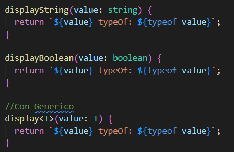
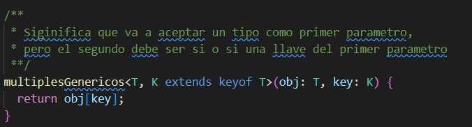
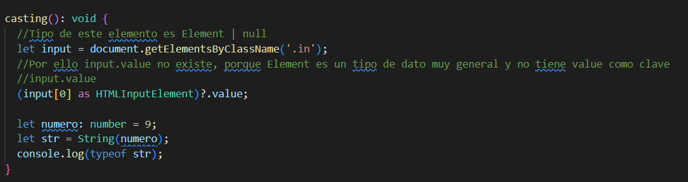
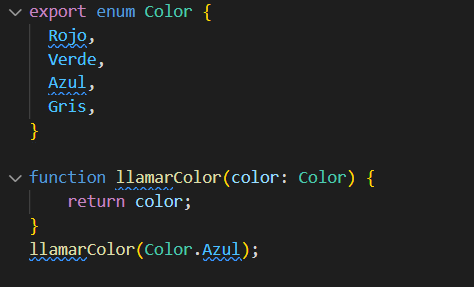

Typescript es un superset de JavaScript. ¿Que significa que sea un superset? Que tiene todas las cosas de Jvascript pero le agrega MAS cosas y funcionalidades que ayudan a mejorar el proceso de desarrollo
Cuando Typescript es compilado todo lo que traia Typescript se va y solo queda JavaScript, por eso en el navegador no se encontraran cosas como interfaces, typos, etc
en Javascript
let edad = 1; edad = 'algo mas'
en Typescript
let edad:number = 1; edad = 'algo más' //Error sintactico
Tambien existen los tipos de javascript
Se declaran entre < y > donde el tipo se aplica en el momento de ejecucion
{{ displayString("String") }}
{{ displayBoolean(true) }}
{{ display(false) }}
{{ display("Otro string") }}
{{ display(person) }}
{{ metodoGenericoDeArreglos(array) }}
Cuando queremos que un tipo sea de otro tipo
Son objetos que enumeran los elementos dentro de él. Se usa principalmente para definir roles o configuraciones y evitar el uso de constantes
